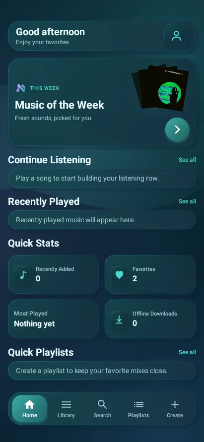
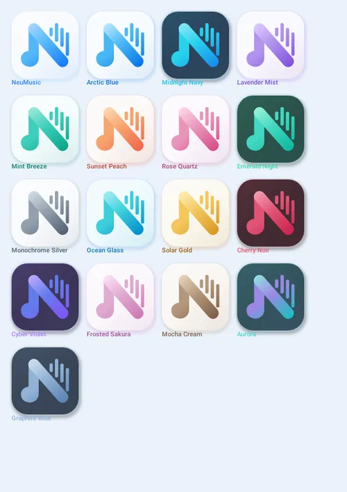
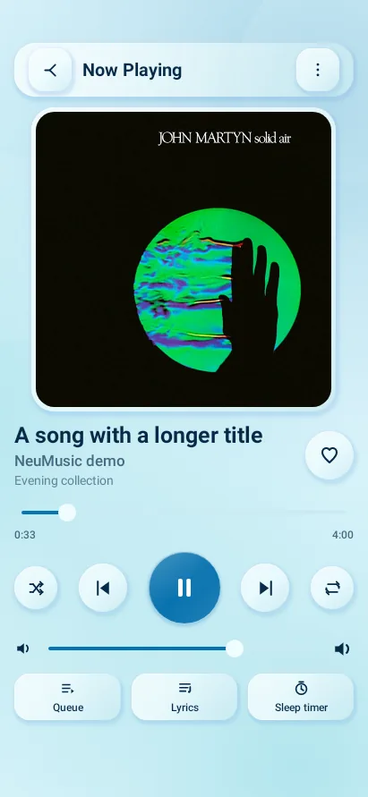
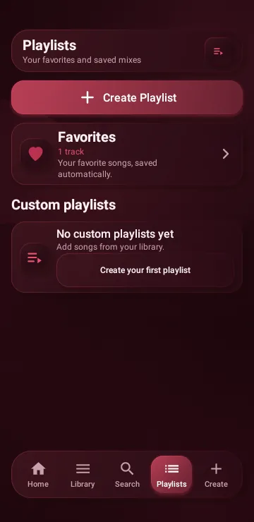
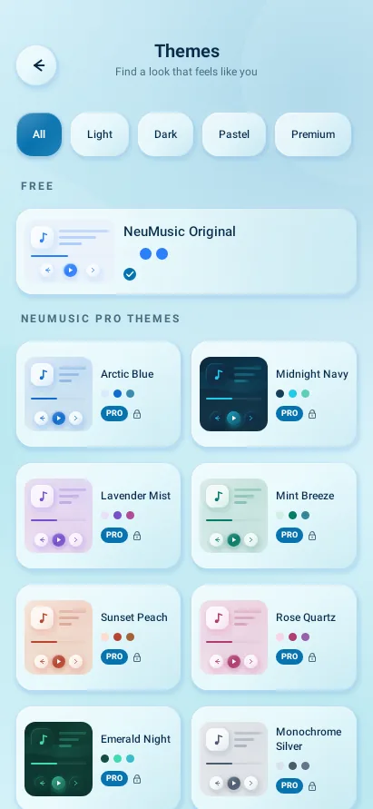
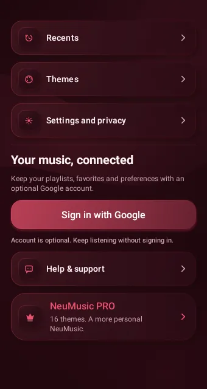

Atmospheric theme engine
Radial light, translucent layered faces, frosted organic forms, colored sheen and soft directional depth are generated per theme.
An offline-first Android music player built around your own library, advanced playback, listening insights and a visual system that changes the whole app—not just one accent color. Online discovery and account sync stay optional.

NeuMusic themes are complete environments—not simple recolors. The same system reaches surfaces, glow, atmosphere, branding, system bars and the player itself.
Radial light, translucent layered faces, frosted organic forms, colored sheen and soft directional depth are generated per theme.

One vector logo geometry powers 17 palettes across in-app branding, splash presentation and adaptive launcher variants.

Controls are measured first and artwork uses the remaining safe viewport. Short windows can scroll without shrinking important controls.
Transparent system bars, safe insets, cutout coverage and dynamic icon contrast keep the experience continuous from top to bottom.
NeuMusic is built around a combination that is uncommon in offline players: a serious local library, advanced playback tools, real listening insights, optional online discovery and a theme system that reaches the entire product identity.
Your device library is the core experience. NeuMusic opens directly to Home and does not require sign-in just to play music you already own.
The 16 PRO themes change backgrounds, surfaces, text, accents, glow, atmospheric forms, app branding, splash presentation and launcher variants—not just a highlight color.
Your local library keeps working without internet. When connected, Jamendo discovery and Music of the Week add new ways to explore without replacing your own files.
Continue Listening, Recently Played, Most Played with real play counts, listening recap, total listening time and top artists/tracks turn playback history into something you can actually use.
Gapless playback, playback speed, a five-band equalizer, presets, Custom EQ, normalization, queue controls and sleep/fade tools live behind the same calm neumorphic interface.
Google account support is optional. NeuMusic asks before Merge & Sync, keeps audio files on the device, encrypts session data locally and supports JSON backup/restore.
Each preview uses NeuMusic's theme palette and interface language. Every theme has its own background, surfaces, text, accent, glow, atmosphere and branding palette.
The familiar cool blue NeuMusic palette, with Light, Dark and System appearance modes.
NeuMusic keeps the interface soft, but underneath it is a full local music stack: library management, Media3 background playback, audio tools, listening statistics, optional sync, backup and personalization.
Real captures from NeuMusic 2.8.1 show how the visual system carries across the app.
Atmospheric surfaces reach every card, stat and navigation element.
Responsive artwork budgeting keeps playback controls available.

More compact cards with the same restrained theme glow.

Filter, preview and apply themes from one dedicated gallery.

NeuMusic still opens directly to Home. An account is an optional layer for profile, trial state and sync—not a gate in front of your own music.
Try the full 16-theme collection for seven days. NeuMusic Original remains available for free.
Get NeuMusicPurchase/subscription management is still a launch placeholder in the current build.Get the current build from the NeuMusic GitHub Releases page. You can use the button or scan the QR code on another device.